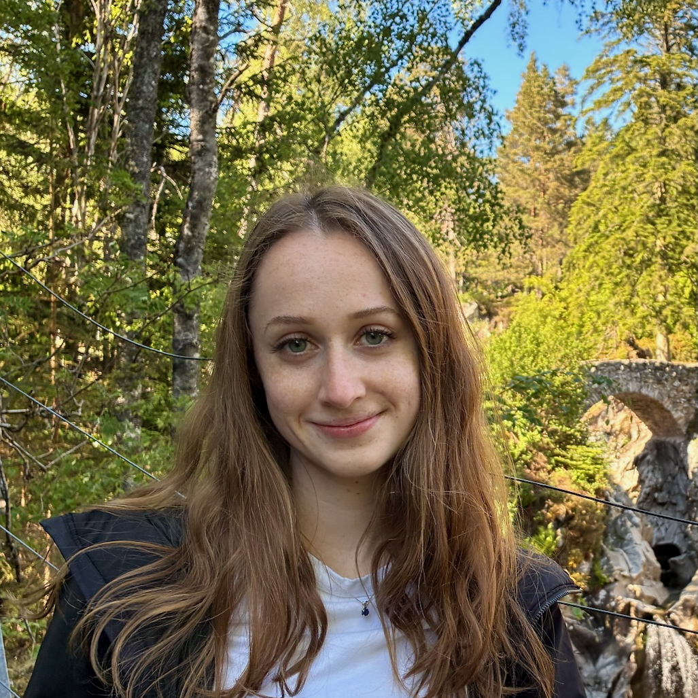

[8]DiscoverPhysics: Benchmarking LLMs for Out-of-the-Box Scientific Thinking
Under review
Leaderboard/project page> physics phd candidate, princeton university
> nsf grfp fellow
I am a 5th-year physics PhD candidate and NSF GRFP fellow at Princeton University, advised by William Bialek and David Schwab. My research focuses on studying the science of AI, drawing on my background in physics and complex systems.
I am an intern at Polymathic AI during Spring and Summer 2026, working on AI for scientific discovery.

PAPERS/
* indicates equal contribution.
[8]DiscoverPhysics: Benchmarking LLMs for Out-of-the-Box Scientific Thinking
Under review
Leaderboard/project page[7]Chain-of-Thought Injection as an Inference-Time Safety Intervention
ICLR 2026 Workshop on Logical Reasoning of LLMs
[6]Large language models and the entropy of English
Under review
[5]ALICE: An Interpretable Neural Architecture for Generalization in Substitution Ciphers
Preprint
Project page + demo[4]When can in-context learning generalize out of task distribution?
ICML 2025
[3]Model Recycling: Model component reuse to promote in-context learning
NeurIPS 2024 SciForDL Workshop
[2]Specialization-generalization transition in exemplar-based in-context learning
NeurIPS 2024 SciForDL Workshop
[1]Learning continuous chaotic attractors with a reservoir computer
Chaos journal · Editor's Pick
Scilight press summaryRECENT_PRESENTATIONS/
American Physical Society (APS) Global Summit 2026
Conference abstractMeta 2025 PhD Forum
View posterAPS Global Summit 2025
Topical Group on Statistical and Nonlinear Physics (GSNP) Student Speaker Award Finalist
Conference abstractBACKGROUND/
Previously, I was an undergraduate at the University of Pennsylvania where I majored in physics (with honors), minored in mathematics and French and Francophone studies, and graduated cum laude. My undergrad research advisor was Dani Bassett, and I researched human white matter brain networks, the human perception of the stars in the night sky, and abstraction in reservoir computers (a type of RNN).
Before undergrad, I worked on a project at WSU designing a flux spectrometer for the Deep Underground Neutrino Experiment (DUNE) at Fermilab, advised by Holger Meyer.
CONTACT/
Email: lindsay.smith@princeton.edu